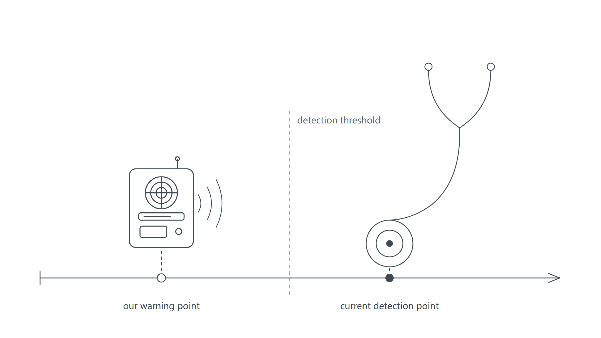
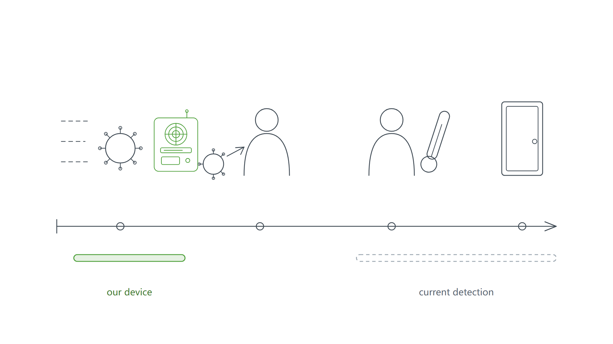
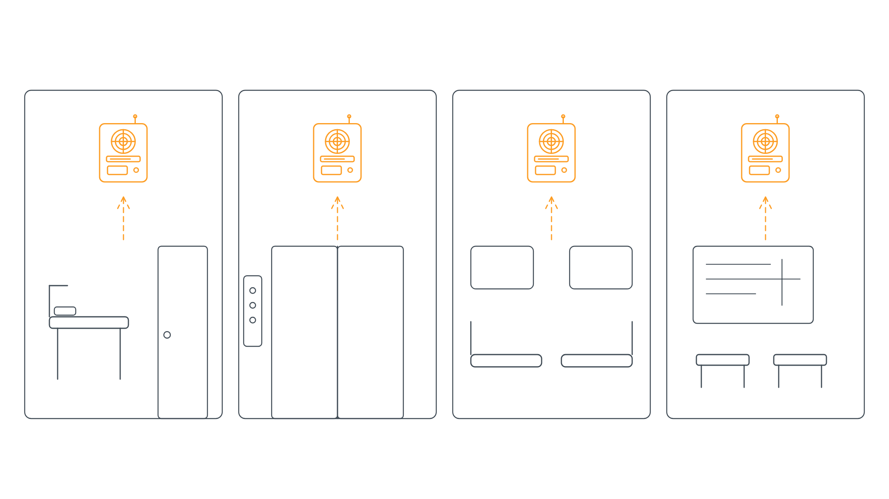
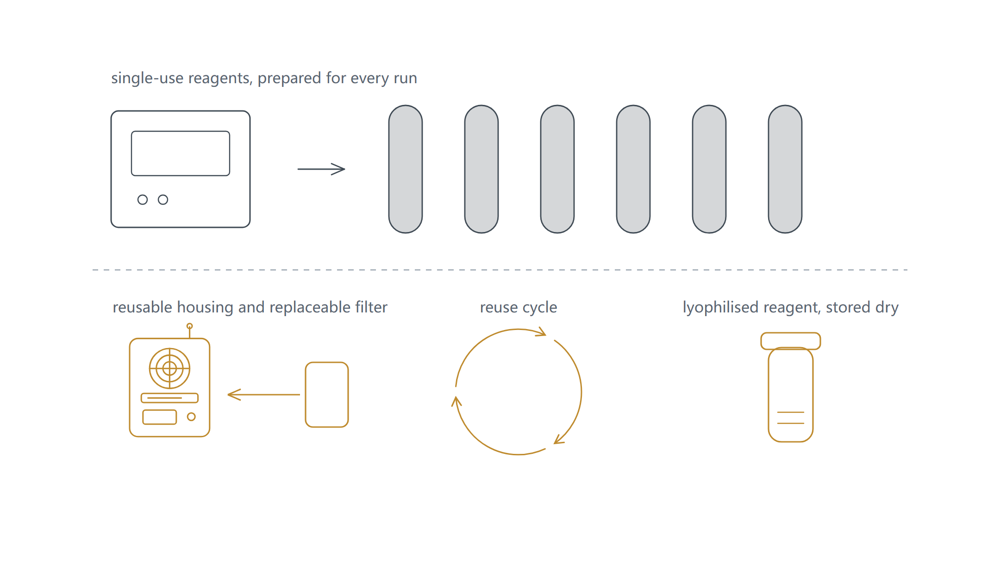
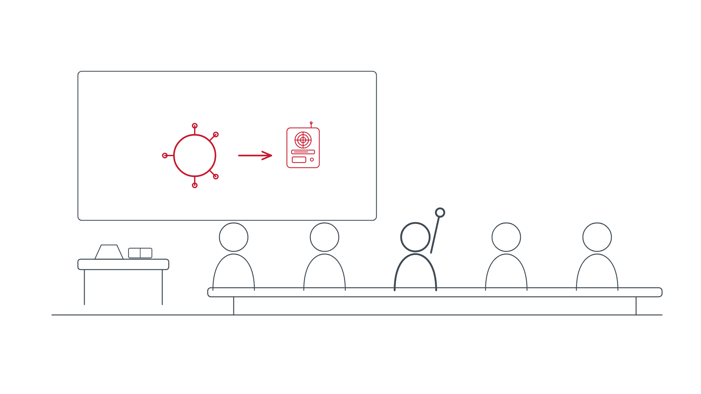
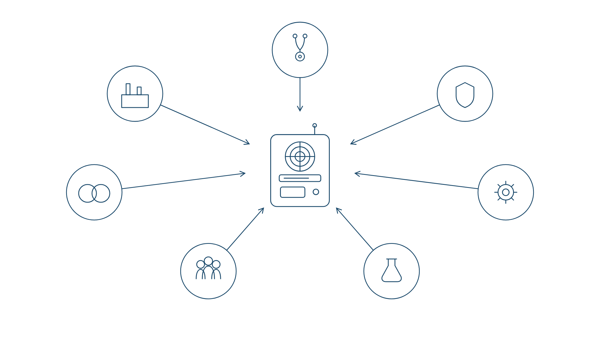
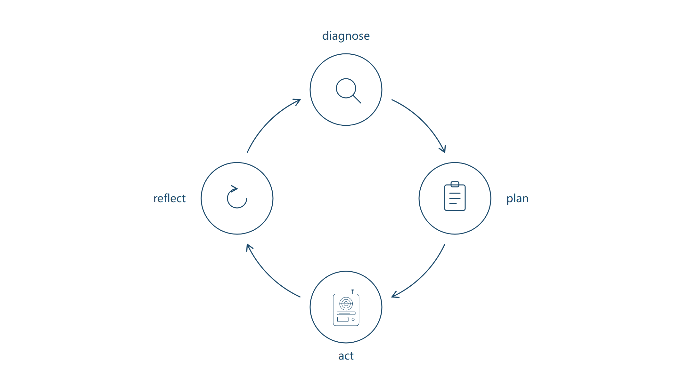
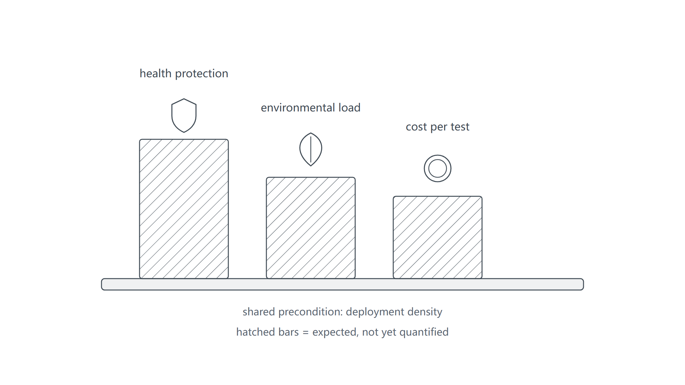
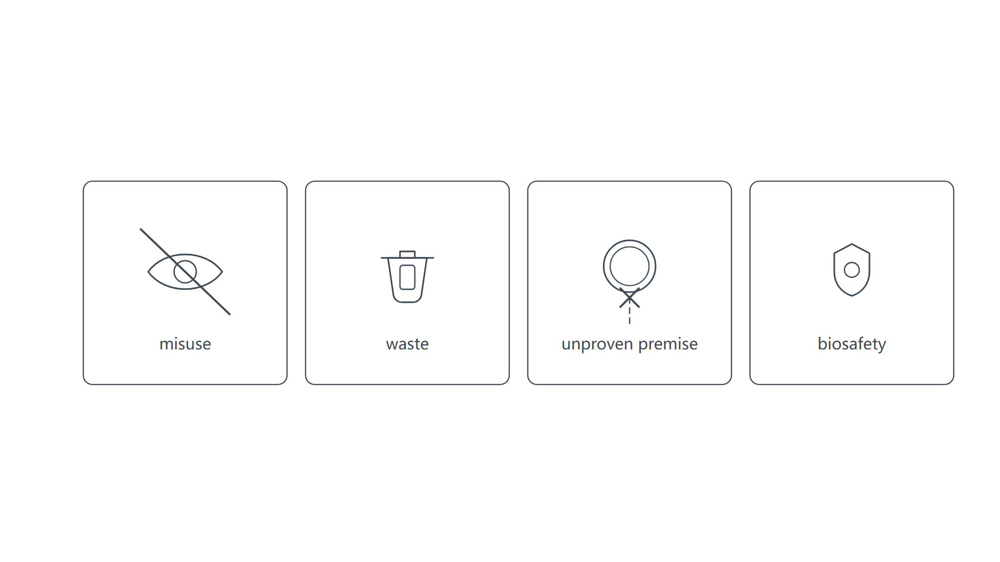

Evaluating Echo Yeast against six UN Sustainable Development Goals
Lead
Describe how you have evaluated your project ideas against one or more of the SDGs.
A smoke alarm, not a stethoscope
If Echo Yeast had to be summed up in one metaphor, it is closer to a smoke alarm than to a stethoscope.
Most influenza A testing today works like a stethoscope: it only hears the virus after it has already flared up inside a person and crossed the detection threshold. What we set out to build is a smoke alarm — one that smells the first wisp of smoke in the air before a fire starts.

Fig. 1 — A smoke alarm warns before the fire; a stethoscope only hears the disease once it shows. (line illustration)
One device, six goals
The idea began as an engineering choice. But when the team seriously asked what it means for sustainable development, it turned out to touch six goals at once: SDG 3 Good Health and Well-being, SDG 9 Industry, Innovation and Infrastructure, SDG 11 Sustainable Cities and Communities, SDG 12 Responsible Consumption and Production, SDG 4 Quality Education, and SDG 17 Partnerships for the Goals. The six sections below describe, for each goal, what we did, who changed our decisions, how certain the impact is, and where we go next.
SDG 3Good Health and Well-being
We put SDG 3 first because the problem the project addresses is singular: influenza A outbreaks are discovered too late.
Why influenza A deserves an earlier alarm
Influenza A is good at hiding. Its reservoir sits in birds, and avian-origin strains typically infect only a few people and do not sustain human-to-human transmission — until a variant appears that can.
Its rhythm makes things worse. Cases surge every epidemic season, public attention fades once the season ends, and the next season a mutated influenza A returns — an enemy that knocks once a year, each time catching us off guard. Most existing detection only fires after the virus has flared up inside the body, which means every season we enter the game halfway through. The value of acting one step earlier is moving the moment of detection from "already outbreak" to "before it enters the body".
The scale supports the same conclusion. WHO estimates that seasonal influenza causes roughly one billion infections worldwide every year, including 3–5 million severe cases and 290 000–650 000 respiratory deaths [2]. Influenza A is the subtype behind every recorded influenza pandemic and still dominates circulation in many regions: in Shenzhen CDC's 2024–2025 surveillance data compiled by our team, 83% of influenza-positive samples were typed as influenza A, with H1N1 predominant [4].
The three mainstream detection routes each carry a structural weakness. qRT-PCR is the most sensitive and quantitative — the accepted reference standard — but it requires laboratory equipment and trained staff and takes one to two hours. ELISA offers high throughput at lower cost for batch screening, but its sensitivity falls short of qPCR and it needs a reader and even longer handling time. Lateral-flow (colloidal gold) strips deliver an on-site result in 10–15 minutes without instruments, at the price of limited sensitivity, uncertain readings and frequent confirmatory retesting. None of the three covers the one thing that matters here: detection in the air, before the virus enters a body.
What a smoke alarm looks like
The device can be explained starting from the air. Virus-laden aerosols are drawn into a filter and captured; engineered yeast recognises them with nanobodies displayed on its surface; the recognition signal is amplified inside the cell and translated into light we can read; a handheld device completes the readout. Four steps, from a pinch of air to one early warning.
Choosing yeast (Saccharomyces cerevisiae, chassis BY4741) as the sensing element is less a quirk than a division of labour. Conventional test reagents are consumables — every run consumes a fresh batch of antibodies and colour reagents. A living cell is self-renewing: as long as it lives, it keeps translating molecular signals into measurable fluorescence. Inside this system, the nanobody works as a translator, converting "the virus's identity" into "chemical language the cell understands", while the PAGER system lifts repression and releases the readout.

Fig. 2 — Moving the warning point to before the virus enters the body: the air-sampling unit and two moments of discovery. (SDG 3 illustration)
What frontline clinicians and public-health experts reshaped
A device that only works in the laboratory contributes nothing to SDG 3. So the first people we brought into the project were clinicians and public-health practitioners.
Wenjie Wang, director of the medical technology department at Shenzhen Second People's Hospital, first endorsed the direction — as an industry, in vitro diagnostics only acts after a virus has flared up inside a person and crossed a threshold, so moving the line of defence earlier has genuine public-health value. He then raised three hard constraints: air detection involves many variables, virus concentrations in open environments are low, and a sensor's effective range may be limited — while self-test reagents on the market can reach false-positive rates of 50–70%. On that basis we promoted specificity and threshold decision from bonus features to primary optimisation targets, and wrote "environmental screening, not diagnosis" into every product statement: mistaking a screening result for a diagnosis costs far more than a missed detection.
Kai Fu, a clinical-medicine doctoral researcher at Sun Yat-sen University, added the physical-feasibility side: exhaled aerosols from people with respiratory infections already carry virus, so testing them works better than sampling ambient air. We therefore set single-person exhaled breath as the priority route and environmental sampling as a supplement. He also left us two questions to answer — the yeast signalling pathway needs roughly one to two hours from receiving a signal to expressing fluorescence, which weakens timeliness; and the hardware must be affordable for primary-care settings. The first drove us to optimise the signalling pathway and shorten the readout time; the second became a design target of roughly 10 RMB per active-breathing device — the order of magnitude Kai Fu suggested, which we now follow in our device plan.
Manqing Deng, a paediatric clinical pharmacist, pulled the focus back to people: children are a high-incidence group for influenza A, the product sits in prevention and belongs to the reagent category, and institutional users — schools and government public-health programmes — should come before households. We set institutions as our first users accordingly.
Shisong Fang, deputy director of the pathogen institute at Shenzhen CDC, tightened the rigour of the question: testing influenza A alone risks missed detections, since dual influenza A+B testing is standard in clinical practice, and target genes should favour conserved regions such as M, NP and NS; air sampling, moreover, is the bottleneck of the whole chain. The first turned dual A+B detection from a slogan into next-phase planning; the second put front-end capture at the top of our validation checklist.
Yiwu Luo of the approval division of the Shenzhen Health Commission drew the regulatory boundary: China has no official standard for airborne virus detection, so such a device cannot serve as a basis for medical diagnosis and can only perform environmental screening and risk warning. We wrote that boundary directly into our positioning.
After these rounds of conversation, SDG 3 translates, for us, into a set of concrete technical and positioning constraints — they come from real settings, and any of them may be rewritten again by the next interview.
Making it accurate, and making it complete
Looking further out, what we care about is how much space the device can cover and how many institutions can keep using it. Answering those questions needs a first step that is already clear: turning deployment density into a measurable indicator.
The reliability line must move forward as well: drawing on immunochromatography to develop portable self-testing, pushing down the false positives Wenjie Wang flagged, and establishing quantifiable detection-limit metrics; and, on Shisong Fang's reminder, bringing dual A+B detection into the next phase.
SDG 9Industry, Innovation and Infrastructure
If SDG 3 is where we want to arrive, SDG 9 is how: a portable biosensing infrastructure that can be deployed for real.
Innovation lies in the low threshold, not in complex parts
The real ingenuity of the device is a "living" system that lowers the threshold of testing while keeping it verifiable. Yeast was not picked casually: it is cheap and easy to culture, it is a eukaryote with a mature signal-transduction network we can borrow, its biosafety profile is favourable and it tolerates the environment well, and its genetic-engineering toolbox is complete — together, these turn "a living cell as a sensor" from an idea into an executable plan.
Fig. 3 — Recognition and signal translation on the yeast cell surface: a nanobody capturing a virus particle. (SDG 9 illustration)
Verify the premise first: getting through the cell wall
Xinyuan Qiu put a finger on a premise we had long overlooked — whether an intact virus can pass through the yeast's comparatively thick cell wall and reach the cell membrane decides whether the device can work at all. And "strong antigen–antibody specificity" is not the same as "high sensitivity": sensitivity must be defined as the smallest number of virus particles detectable per unit volume, and the quantitative basis for that has to be built from scratch. His path: get it running first, optimise later — run the system with antigenic-epitope short peptides, and if cell-wall penetration fails, switch chassis decisively rather than sink further work into complex engineering.
Zhouqing Luo and Hui Wu added the same preparation from different angles: on the receptor route, engineer yeast's endogenous Ste2 rather than a human GPCR; on validation order, first complete one full pathway with a visual response, then talk about swapping components. Methodology needed homework too — modelling advisor Haili Zhang suggested making the most of limited data: use first- and second-order derivatives of OD and fluorescence time series for prediction, and statistical hypothesis tests for p-values, so early data can project later trends, directly serving shorter detection times. On the molecular-docking side, Xiaolong Liu required rebuilding models with AlphaFold 3.0, MM/GBSA free-energy decomposition and molecular-dynamics simulations, closing the loop with SPR or MST wet-lab validation.
Weak signal is another problem to solve: virus concentrations in air are low, and too few activated yeast cells cannot be read. Zhouqing Luo suggested borrowing yeast's native α-factor cell-communication pathway, building inter-cell communication and positive-feedback amplification into the system so that even a small number of activated cells becomes visible.
Nor do we expect this device to stop at H1N1. The real value of the PAGER-Yeast platform is modularity and replaceability: the membrane nanobody recognition unit can iterate quickly against new antigens — swap the recognition head, and the same chassis points at the next target.
Hardware and the integrated device
The air path, enrichment, readout and integrated structure of the device are still in design; cost estimates and the deployment form factor are not finalised. This section will be completed when the hardware page is done, and we deliberately avoid pre-empting it here. One judgement can be recorded now — Shisong Fang's: if front-end capture fails to collect enough virus, however sensitive the recognition and readout behind it, nothing works. Once the hardware design is settled, enrichment efficiency is the first question to answer.
SDG 11Sustainable Cities and Communities
Where the project lands was actually decided by one sentence from Yiwu Luo: in large open spaces the value is limited; what deserves deployment are enclosed, crowded places.
Alerts must land where they can matter
The value of early warning is mostly collective — pulling a cluster outbreak back before it takes shape prevents more loss than catching any single case.

Fig. 4 — Where the device lands: four crowded, poorly ventilated spaces where people linger. (SDG 11 illustration)
A boundary that must hold
Placed in crowded spaces, the capability boundary must be stated first: the device performs environmental risk warning — what it signals is that "the air in this space may have carried virus exposure". It points at spaces, not individuals.
Who uses it first: institutions
Manqing Deng's institutions-first judgement applies directly here: schools and government public-health programmes welcome the device, their decision chains are short, and the user side must reach zero-operation threshold.
Turning the unknown into numbers for the manual
If early warning can be deployed routinely, it has a chance to become an early-perception layer of urban public health. Whether it stands depends on measured data from real enclosed spaces: building one pilot each in a fever clinic and an enclosed classroom, and measuring the detection limit and risk-concentration thresholds, is the validation action we set for this goal.
SDG 12Responsible Consumption and Production
Compared with centralised RT-PCR testing, this device is lighter — fewer reagents, lower instrument requirements. That is what SDG 12 looks like inside our project.
Reagent format: start from lyophilised powder
The first thing this goal can ground today is reagent format. Lyophilised powder is easy to store and distribute, and combined with a reuse mindset it promises to push the per-test cost down; compared with centralised RT-PCR, which needs freshly prepared reagents and dedicated instruments, this route is lighter in both consumables and energy.

Fig. 5 — The circular orientation of SDG 12: replaceable components, reuse and low energy — making "saving resources" a property of the structure. (SDG 12 illustration)
Compliance and biosafety, promoted to design requirements
Yiwu Luo moved compliance and safety from afterthought to design requirement: a product with an integrated disinfection module falls under disinfection apparatus and needs disinfection-product registration; with no national standard yet, an enterprise standard can come first. Requirements such as UV disinfection, self-disinfecting components and virus inactivation in the collection system will be written into the specification together with the hardware design. They sound like burdens; they are exactly what allows the device to be permitted into real environments.
The missing puzzle piece: life-cycle assessment
The tone of this goal is set: detection that uses fewer resources. A full life-cycle assessment — carbon footprint, consumables, disposal of electronic waste — is the piece still missing; it will turn this section from a claim into a set of citable numbers. Using data to support SDG 12 is the standard we set ourselves.
SDG 4Quality Education
For a frontier technology to be caught by society over the long run, a considerable share of people must first understand what it does.
Explaining the project to non-specialists
With that in mind, the team gave synthetic-biology outreach talks to pharmacy students at Shenzhen No. 1 Vocational School and to first-year 2026 pharmacy and pharmaceutical-engineering students at our university, and handed out a self-written influenza A protection handbook. To our surprise, the feedback came back from the "users".

Fig. 6 — Outreach talk: explaining the project to non-specialists. (SDG 4 illustration)
The talk also benefited us: to explain the project clearly to a non-specialist audience, the team had to re-organise and simplify the complex technical logic, which in turn deepened every member's understanding of the project as a whole.
Unexpected feedback from end users
Participants asked for a more portable device and faster testing. These two real suggestions from end users became direct references for prototype iteration and scenario refinement, and corrected our earlier bias toward laboratory metrics. They remind us: a device that "works technically" but is neither portable nor fast will never actually be used in the field.
From one event to a channel
The talk also shaped the next step: the session was too short to go deep into experimental principles and engineering details; the handbook was distributed in batches without on-site walkthroughs; and the event had no hands-on workshop. Turning SDG 4 from a one-off event into a channel is our next goal — opening a consultation channel for interested participants, running small themed salons, and iterating the handbook on collected feedback.
SDG 17Partnerships for the Goals
Almost every key decision in this project was pushed by external partners — people from different fields came in round after round, tore the plan apart and rebuilt it.
Every loop brings a new partner
Clinicians, CDC and health-commission experts, hardware engineers, academic peers and the public came in, one round after another, along the spiral of action research. Each round starts from the same move: diagnose the problem first, then plan, act, and look back at what we judged wrong — then enter the next round with new questions.

Fig. 7 — Seven kinds of partners who pulled the project back to the real world. (SDG 17 illustration)
What inter-team exchange gave us
At the South China iGEM meetup, other teams questioned us on low airborne virus concentration, yeast sensitivity, reporter leakage, and how we differ from conventional testing; the mock review exposed weak spots in our presentation. At the first Asia-Pacific iGEM Conference (APiC, held in two phases at SUSTech and HKU), mock judges asked us to focus the application scenario further, add data evidence and watch compliance wording — every point became an item on our improvement list. Online yeast-focused meetups with several universities let us exchange practical tricks in experimental design, quality control and data handling.
A self-imposed rule: do not appeal to authority
Xinyuan Qiu's remark that "expert statements and social practice cannot substitute for factual evidence; avoid appealing to authority" applies to us too: interview quotes can serve as design criteria, never as project conclusions. It also sharpened our sense of which collaborations last: contact with a contract manufacturer made us realise that everyone's expectations must be stated and aligned at the start of a collaboration for it to grow into long-term cooperation.
A method to hand to those who come after
We expect this collaboration network across clinical care, regulation, industry and academia to lower the cost of repeated trial and error; and what we believe is most reusable is the method itself — the action-research spiral combined with inter-team review.

Fig. 8 — The action-research loop: diagnose, plan, act, reflect — and back to diagnose. (SDG 17 illustration)
Summary
Taken together, the six goals show that the road already walked, the directions now moving, and the costs that must be taken seriously are all plainer than our first optimistic version.

Fig. 9 — Three steps of long-term impact, and how sure we are of each. (line illustration)
Where the impact finally lands
Where the impact lands depends on how widely the device can spread. Deployed for real in fever clinics and schools, the moment a cluster outbreak is noticed could move substantially earlier; once warning links to disinfection, blanket disinfection and drug overuse should also fall. The economic gain comes from the material itself — replacing freshly prepared reagents with lyophilised powder should cut the per-test cost. All three climbs rest on one premise: deployment density decides the scale of benefit, and density can only be accumulated through measurement and pilots.
Costs we watch closely
We also fill in the cost column. The sharpest risk is misuse — if environmental screening is mistaken for diagnosis, or false positives trigger unnecessary school closures, what is wasted is not only resources but public trust; that is why "environmental screening, not a medical device" must appear in every product statement. Next is waste: consumables and e-waste must be planned together with deployment scale, or SDG 12's green narrative will not hold. The remaining two are technical premise and baseline: the premise "can the virus cross the cell wall" we choose to verify before investing rather than bet on; and biosafety is promoted to a design requirement, not patched on afterwards.

Fig. 10 — Four risks we actively watch: misuse, consumables and waste, a premise that fails, biosafety. (line illustration)
The next measurable stop
These questions are not abstract — they are already scattered through the six sections above, from detection-line reliability and the cell-wall premise, to real-space measurement and life-cycle assessment, to outreach channels and collaboration mechanisms. What we intend to do is turn one of them into the next measurable, answerable stop — and then the next.
References
United Nations. Sustainable Development Goals — the 17 goals and their indicators. https://sdgs.un.org/goals
World Health Organization. FluNet / Global Influenza Surveillance and Response System (GISRS) — global influenza surveillance data on subtype detections and positivity. https://www.who.int/tools/flunet
Shenzhen Center for Disease Control and Prevention. Influenza surveillance summary 2024–2025 (subtype composition of positive samples; data compiled by the team).
Academic community and collaboration: South China iGEM meetup; the 1st Asia-Pacific iGEM Conference (APiC, SUSTech & HKU); multi-university yeast-focused online meetups.
![Orange and grey line drawing: a cross-section of a round yeast cell with a double-lined cell wall and an inner plasma membrane; six orange Y-shaped nanobodies stand on the membrane, while a spiked virus particle sits outside the cell at upper left; a dashed arrow runs from the virus through a dashed gap in the cell wall towards one nanobody, with a question mark beside it; inside the cell a solid arrow curves from the membrane to the nucleus, which holds an orange filled dot emitting short rays; three legend rows sit at the right.](../static/image/sustainability/fig03-sdg9-yeast-nanobody.png)